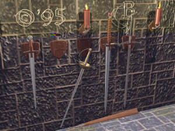
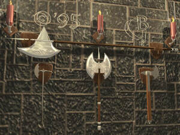

COMBAT SYSTEM
Introduction
Combat in darkeMUD is both entertaining and deadly. It will
require some getting used to before you can go up against difficult
monsters without fear of instant death. At its most basic level, combat
consists of 2 second turns in which every participant in combat gets a
chance to hit. How many hits you get depends on several things which we
will discuss later. Combat takes place automatically, and the only way
to end it is to flee. You may flee manually by typing a direction
command (n, s, e, w, etc.) to get out of the room, or you may set
yourself to flee automatically if your hp is low (see 'help wimpy').
Be careful, some monsters will attack on sight!
Initiating Combat

You may start combat with any monster or player by typing 'kill
[who]', where who is the name of what you wish to kill. Note that once
you 'kill' something, you will ALWAYS attack each other on sight until
one of you dies or logs off.
To-Hit Chance
Of course, in order to damage your opponent, you must hit him or
her. Your chance of doing so depends on a number of factors.
If you are wielding one or more weapons:
- Your skill with the weapon(s) -- using a weapon with which you have
no skill incurrs a SERIOUS penalty.
- The hand in which you wield the weapon...unless your race is
is ambidextrous, you hit much better with the limb you favor.
Use the 'score' command to see what it is.
- How many weapons you are wielding. Wielding more than one weapon
also incurrs a serious penalty, though you may attack with
both of them at once.
- How well you can see in the room (how dark is it?)
NOTE: Certain higher-level skills can offset the penalties for
attacking with multiple or offhand weapons.
If you are attacking bare-handed:
- Your melee skill.
- Your martial arts skill, if any.
- How well you can see.
Hit Points and Damage

Every player and monster has a certain amount of hit points (hp),
of which they must be deprived if they are to die. In addition, every
living thing has a body, and certain limbs may take damage and be
severed. The effects of severed limbs depends on the limb...you may not
fly without wings, fight without arms, walk without legs, etc. In
addition, your head may be severed, allowing you to die before you lose
all of your hp. There are also several other ways to die without having
your hp reduced to zero, and, perhaps even worse, several ways to have
your hp reduced by a great amount in one blow!
The amount of damage you do in combat is based on your weapon
and how good it is. Certain skills are capable of ascertaining the
quality of weapons. Most of the time, you can expect not to have
more than ten hit points done to you even on a good hit, but there
are SEVERAL exceptions. If you are attacking bare-handed, damage is
based only on your strength, melee skill, and martial arts skill, if any.
Damage may be prevented by armour. Armour is a necessity if you
wish to fight difficult monsters without being instantly slain. Several
different types of armour are available, all with different merits. Most
of them are pretty much self explanatory, for instance, leather armour is
great against cutting weapons, but watch out for clubs and maces. Plate
is good against most weapons, but electrical spells can still make your
day. Several spells also provide protection against damage.
Critical Hits
The better a weapon is and the better your skill with it, the
greater the chance of incurring a critical hit. The results of the
critical hit depend on the weapon you are using (or melee and martial arts
skill if no weapon), your skill with that weapon, and your opponent's
armour. For instance, crushing weapons often stun opponents, while
cutting weapons tend to lacerate and sometimes even lop off limbs. On
extremely rare occasions, critical hits can kill outright! You will
notice that this is not so rare is you try to attack a particularly
awesome monster with no armour!
Basically, the critical hit system is a large part of what makes
combat on DarkeMUD so colorful. There are probably upwards of several
thousand possible critical hit results with more on the way. Hopefully,
you will find ways of exploiting critical hits to do your bidding, but I
haven't figured out how to, so good luck!
Thrown Weapons
Some weapons (daggers, hand axes, etc.) may be thrown. To do
this, merely type:
throw [weapon] at [target]
You lose the weapon by doing this, but hits inflict much more damage than
just wielding the weapon, and there is a greater chance of inflicting a
critical hit.